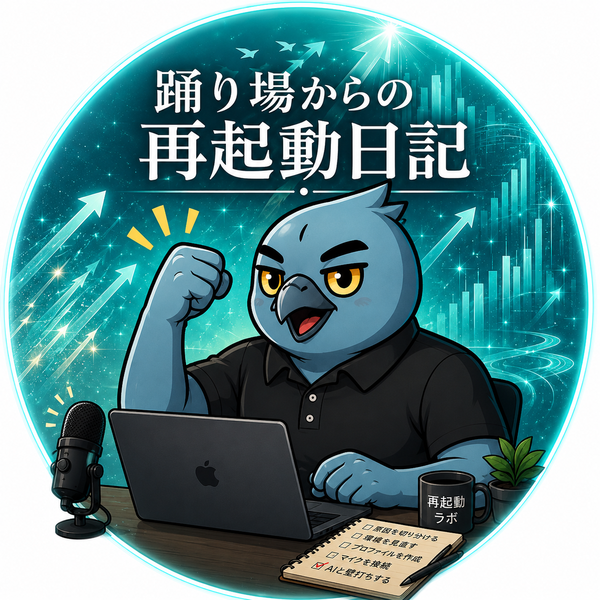

ルク
踊り場からの再起動
会社を休んだ40代。
父親として、トライアスロンをする人として、AIと壁打ちしながら、もう一度自分の人生を選び直している途中です。
本拠地はSubstack「踊り場からの再起動」。記事とボイス日記で、日々の再起動の記録を発信しています。

踊り場からの再起動
会社を休んだ40代。
父親として、トライアスロンをする人として、AIと壁打ちしながら、もう一度自分の人生を選び直している途中です。
本拠地はSubstack「踊り場からの再起動」。記事とボイス日記で、日々の再起動の記録を発信しています。